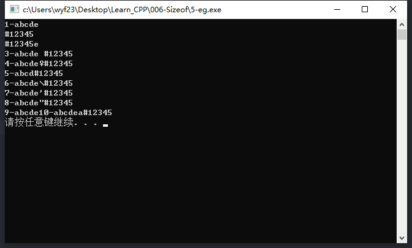
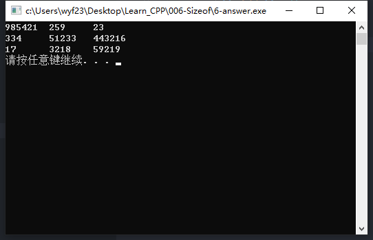

十种转义字符的应用
【实例名称】
以下列各式使用10种转义字符，看得到什么效果：
1 | cout << "1abcde\n#12345\n"; |
- 其中，字符串常量中开头1是序号，以后要依次替换为2，3，4…10；
- 中间的\n是转义字符，以后依次换为\r，\t，\f等；
【算法描述】
查看转义字符的效果
- ① 输出字符串”1abcde\n#12345\n”；
- ② 将\n依次换为\r，\t，\f等，将开头的‘1’依次替换为2，3，4等；
- ③ 重复①9次；
【示例代码】
1 |
|
【运行结果】

【思路扩展】
输出9个大小不等的整数，分3行、3列输出，要求每列数据对齐，如何实现？
解题思路
- 使用制表符\t
- 使用换行符\n
【解题代码】1
2
3
4
5
6
7
8
9
10
11
12
13
14
15
16
using namespace std;
int main()
{
cout << 985421 << "\t"
<< 259 << "\t"
<< 23 << "\t\n"
<< 334 << "\t"
<< 51233 << "\t"
<< 443216 << "\t\n"
<< 17 << "\t"
<< 3218 << "\t"
<< 59219 << endl;
system("pause");
return 0;
}
【运行结果】
